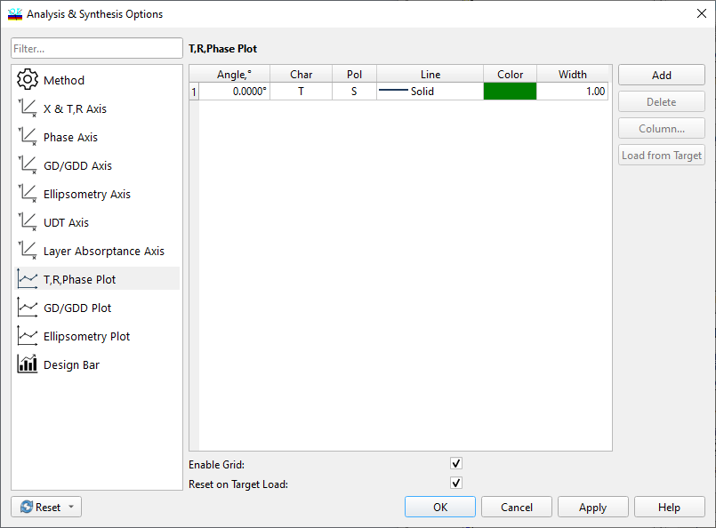

Selecting Characteristics To Be Plotted
Selecting Characteristics To Be Plotted
Navigation: OptiLayer Menu Commands > Synthesis Menu > Analysis and Synthesis Options >
Selecting Characteristics To Be Plotted
` <idh_synthesis_options_axes.html>`__ ` <idh_synthesis_options.html>`__ ` <idh_synthesis_options_design_b.html>`__
The Analysis/Synthesis Plots Option allows the user to specify characteristics to be displayed on the screen. It is available in all evaluation and optimization modes.
In the T & R & Phase page, options for characteristics to be plotted include transmittance, reflectance, and absorptance at various angles of incidence and S, P, or average (A) polarization states, along with various phase characteristics. Up to ten plots can be displayed in a single evaluation window.

A characteristic to be plotted is selected by setting values in the Angle, Char, and Pol fields of the list box. In the Angular Mode, different plots are characterized by wavelength values rather than incidence angle values, and the dialog is modified to reflect this.
To specify the required data, simply click the mouse on the desired cell. You can use popup boxes listing available options, or manually enter the required settings.
The Angle column is used to set the angle of incidence. In Angular mode, the Angle header is replaced with Wavelength.

Note: The angle of incidence is always specified in the Incident Medium. For back reflectance and similar characteristics, the angle of the back reflectance should be computed using Snell’s Law if the Exit Medium is different from the Incident one.
The Pol column selects a state of polarization - P, S, or A, where P and S stand for the p- and s-polarized light, and A stands for non-polarized light. The Char column defines the characteristic type, which can be T, R, BR, A, ϕr, ϕt, dϕr, dϕt (see Abbreviations for spectral characteristics). The picture above shows only one of several possible pages related to transmittance, reflectance, and phase characteristics plotting. To plot group delay and group delay dispersion, choose the GD / GDD Plot page. In this case, in the Char column, you can select one of the following characteristics: GD(r), GD(t), GDD(r), GDD(t). For ellipsometric angles, switch to the Ellipsometry Plot page and set Psi and/or Delta angles in the Char column. For each characteristic, you can specify its own line style (solid, dotted, etc.) and line color using the Line and Color columns. The Add button creates one more line in the list box. The Delete button removes the selected entry from the list box. The Column button starts the Column Editor for easy setting data in columns. Two checkboxes are used to modify plotting:
If the Grid checkbox is selected, a grid is superimposed on the plots.
The HiRes Plots checkbox defines the quality of displayed plots. When enabled, OptiLayer uses more than 600 wavelength points to display plots on the screen. Otherwise, only about 60 wavelength points (plus target points if any) are used to save redrawing time and speed up calculations.
See also: